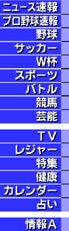
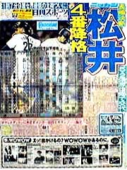

|

丹波哲郎 爆笑問題 Ｓ･ウィーバー 山田五十鈴 山下久美子
|
|
98年5月7日13時57分3秒(JST)更新
ニュース速報 | 海外ニュース 新弥の【ｃｈｅｃｋ】岡田監督のＪリーグ行脚の功罪をチェック！ |
|
|  |
野 球 桑田 左手亀裂骨折か サッカー 市川 １７歳代表！ スポーツ 朋美自転車でシドニーへ 競 馬 アゲイン暴走追い切り 芸 能 Ｘ会見「自殺しないで」 完全速報中！ バトル｜Ｊリーグ ● 在阪球団はお任せ！なにわ版 ● サポーターからのメッセージ ● プレーバック選抜高校野球 |
||
|
【芸能−秘】妻が語るカリスマ 【まゆげのノーさん】Ｖのカギ握るメディカル部門 【リアルプロ野球プレイヤー】西武 マルちゃん走りにも注目 猪木の"希少"記念品プレゼント 海外リポート | 宝くじ| 健康連載 | ペットＷｅｂ| Welcome | リンク | |
|||
日刊スポーツ新聞購読のお申し込みは
フリーダイヤル０１２０−８１−４３５６（ハーイヨミゴロ）
・メールの宛先＝webmast@nikkansports.co.jp
「nikkansports.com」へのメールには、住所、氏名、電話番号を明記して下さい。
・nikkansports.comに掲載の記事・写真の無断転載を禁じます。すべての著作権は日刊スポーツ新聞社に帰属します。 Copyright1998,Nikkan Sports News.
・[インターネット上の著作権に関する日本新聞協会の見解]
・[Cookieによる広告制御のお知らせ] ・[日刊スポーツ新聞社 会社案内・採用情報]
・このページは Netscape Navigator 2.0 以上に対応しています。その他のブラウザでは記事が欠落することがあります。